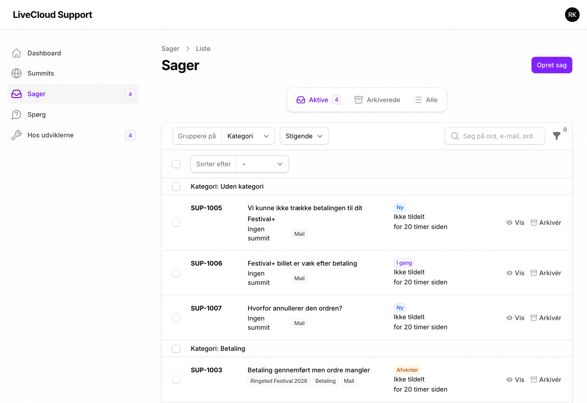
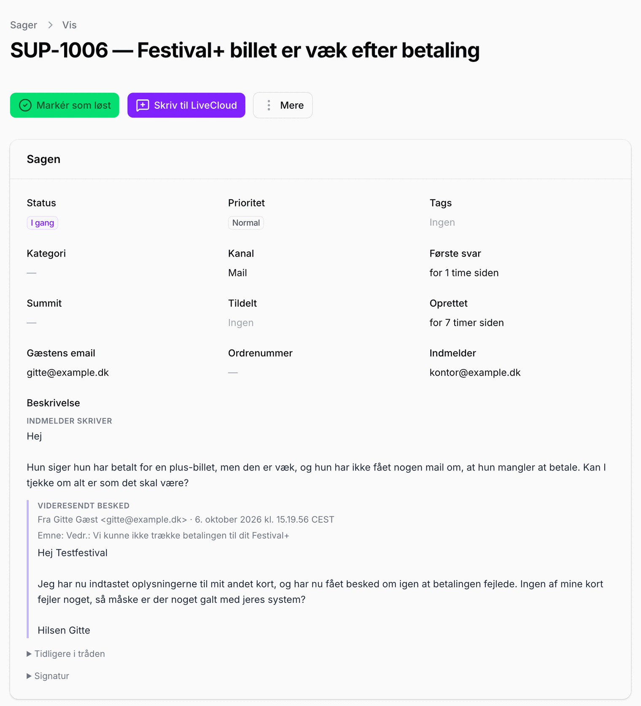
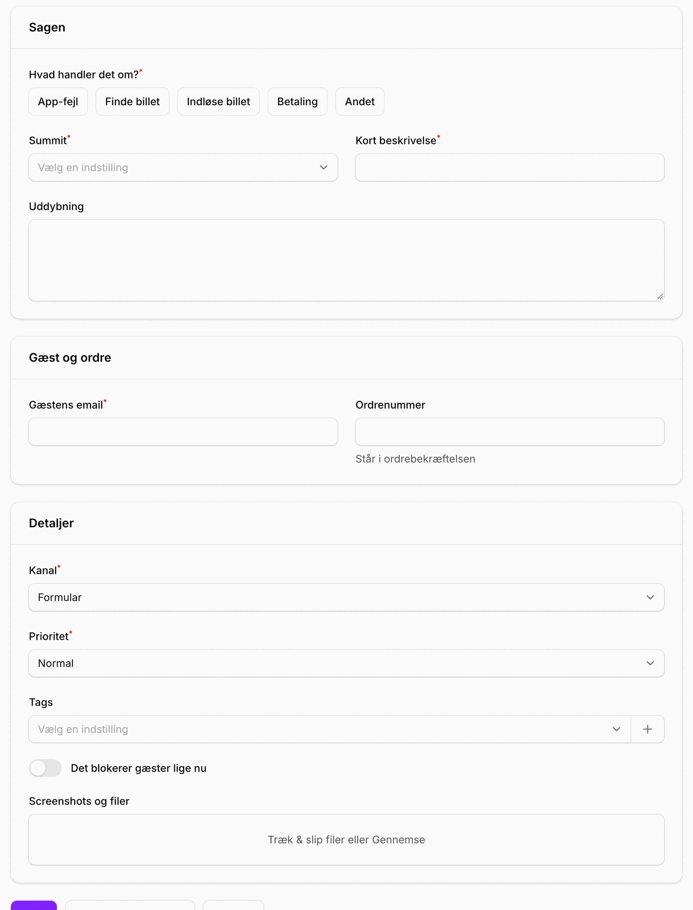
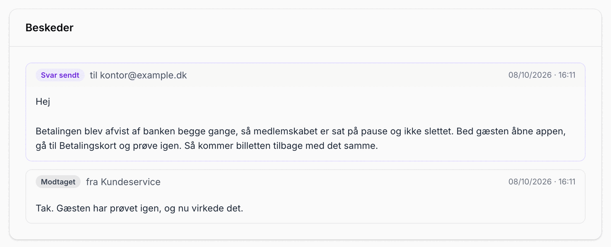
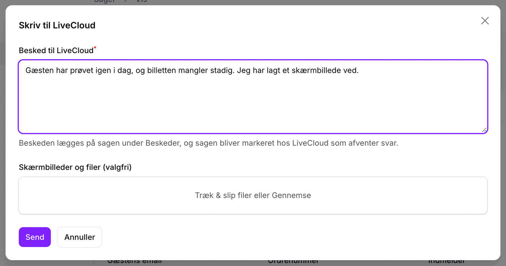
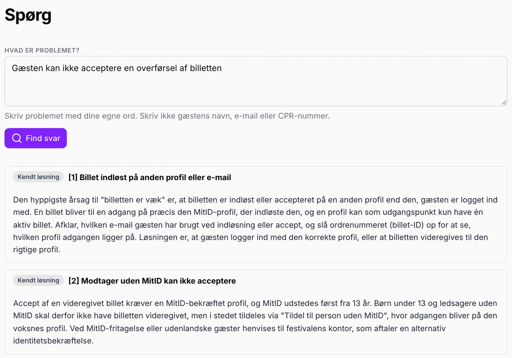
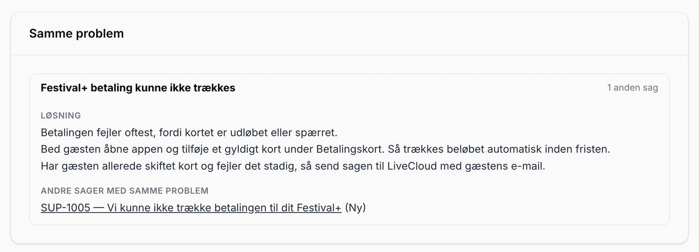
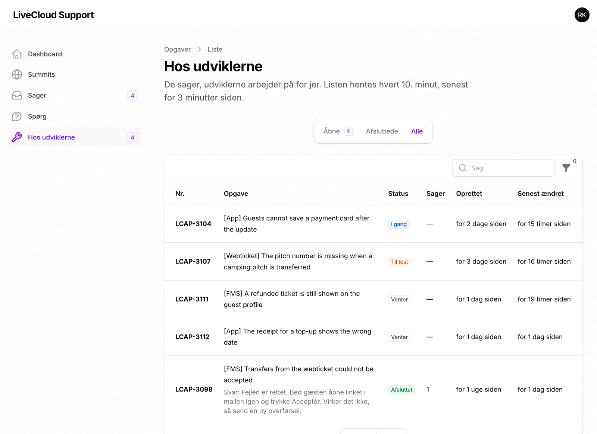
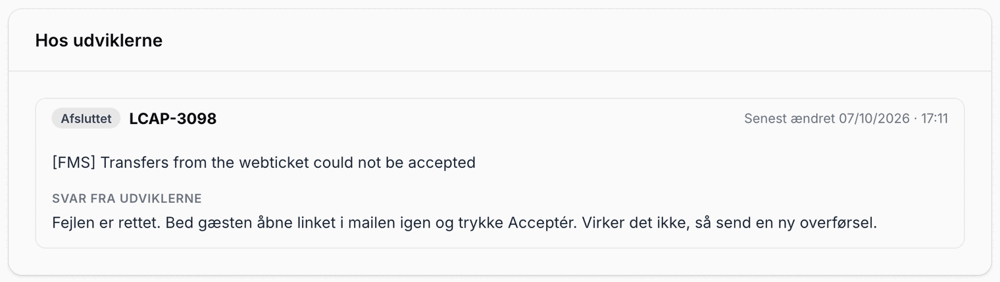

Support-systemet: meld og følg jeres sager
Du har fået et login til support-systemet og denne guide. Læs guiden igennem én gang, så kan du selv melde en sag til LiveCloud, følge den og finde svaret til gæsten. Knapper er skrevet, som de hedder på skærmen, fx Opret sag.
Start herFind din opgave
Læs "Log ind" først. Læs derefter afsnittet for det, du skal. Går noget galt, slår du op under "Hvis noget driller".
Du vil følge en sag
Du vil se, hvad der er sket, eller skrive nyt til LiveCloud.
Du leder efter svaret
Du vil se, om problemet allerede har en løsning.
AlleLog ind
- Gå til support.livecloud.dk.
- Log ind med din e-mail og din adgangskode.
- Har du glemt koden, trykker du på Glemt din adgangskode? på login-siden.
Mangler en kollega adgang, skriver du til support@livecloud.dk. LiveCloud opretter brugeren.

MeldMeld en sag
Du kan melde en sag på to måder. Mail er nemmest, når gæsten har skrevet til jer. Opret sagen direkte i systemet, når det haster, eller når du selv har opdaget fejlen.
Pr. mail
- Skriv til support@livecloud.dk. Har gæsten skrevet til jer, videresender du gæstens mail.
- Skriv dit eget spørgsmål øverst, før den videresendte mail. Skriv også, hvad du allerede har prøvet.
- Skriv ordrenummeret som "Ordrenr. 12345", og tjek, at gæstens e-mail står i mailen. Så udfylder systemet selv de to felter på sagen.
- Vedhæft de skærmbilleder, gæsten har sendt.
- Send mailen. Du får en kvittering med sagens nummer, fx [SUP-1006].
Sådan ser en god mail ud:
Emne: Festival+ billet er væk efter betaling
Dit spørgsmål øverst
Hej. Gæsten har betalt for Festival+, men billetten er væk i appen. Vi har bedt hende logge ud og ind igen, og det hjalp ikke. Kan I se, hvad der er sket? Ordrenr. 48213.
Fra: Gitte Gæst <gitte@example.dk>
Hej. Jeg har betalt, men min billet er væk ...
Én mail pr. problem. Står der to forskellige problemer i samme mail, bliver de til én sag. Så er den svær at følge.

Direkte i systemet
- Gå til Sager, og tryk på Opret sag. Siden hedder "Meld en fejl".
- Vælg, hvad det handler om: App-fejl Finde billet Indløse billet Betaling eller Andet.
- Vælg festivalen under Summit, og skriv en Kort beskrivelse. Forklar resten under Uddybning.
- Skriv Gæstens email. Skriv også Ordrenummer, hvis du har det.
- Læg skærmbilleder under Screenshots og filer.
- Tryk på Opret.
Haster det, og rammer det mange gæster? Sæt Prioritet til Akut, og slå Det blokerer gæster lige nu til, før du trykker på Opret.
Svaret fra LiveCloud kommer på sagen og som mail til dig.

FølgFølg en sag
Find jeres sager
Under Sager står alle jeres sager. Øverst vælger du mellem Aktive, Arkiverede og Alle. Tryk på Vis for at åbne en sag. I søgefeltet søger du på et ord, gæstens e-mail, ordrenummeret eller sagens nummer.
| Status | Det betyder |
|---|---|
| Ny | Sagen er modtaget. Ingen hos LiveCloud har taget den endnu. |
| I gang | LiveCloud arbejder på sagen. |
| Afventer | Sagen venter på et svar eller en oplysning, før den kan komme videre. |
| Sat i bero | Sagen er lagt til side for nu. |
| Løst | Der er fundet en løsning eller givet et svar. |
| Lukket | Sagen er afsluttet. |
Det står der på sagen
| Felt | Indhold |
|---|---|
| Sagen | Status, gæstens e-mail, ordrenummer og hvornår sagen er oprettet. |
| Beskrivelse | Din mail: dit spørgsmål øverst og gæstens mail nedenunder. |
| Samme problem | Løsningen, hvis flere sager handler om det samme. Se Samme problem. |
| Hos udviklerne | Vises, når sagen hører til en opgave hos udviklerne. Her står opgavens status og udviklernes svar. |
| Beskeder | Det, I og LiveCloud har skrevet til hinanden om sagen. |
| Billethistorik & opslag | Knappen Åbn i Ringsted billet-opslag åbner opslaget i FMS. |
| Tidslinje | Hvad der er sket med sagen, og hvornår. |

Skriv videre på sagen
Har du nyt til sagen, eller vil du svare LiveCloud, kan du gøre det på to måder. Begge lander under Beskeder på sagen.
- I systemet: åbn sagen, og tryk på Skriv til LiveCloud. Skriv beskeden, læg eventuelt skærmbilleder ved, og tryk på Send.
- Pr. mail: svar på mailen fra LiveCloud Support, og behold sagens nummer i emnefeltet, fx [SUP-1006].
Sagen bliver markeret hos LiveCloud som afventer svar. Er sagen løst eller lukket, åbner den igen af sig selv.

Når gæsten har fået svar
Tryk på Markér som løst øverst på sagen, når gæsten har fået sit svar. Er problemet ikke væk alligevel, trykker du på Genåbn.
| Under "Mere" | Det gør knappen |
|---|---|
| Relaterede sager | Knytter sager sammen, som hører til samme gæst eller samme forløb. |
| Sæt på pause | Skjuler sagen fra Aktive indtil en dato, du vælger. |
| Arkivér | Flytter sagen til Arkiverede. Den kan hentes ud igen. |
Find svaretFind løsningen
Spørg
Under Spørg skriver du problemet med dine egne ord. Så leder systemet i de løsninger, LiveCloud har skrevet, i udviklernes svar og i jeres egne løste sager.
- Tryk på Spørg i menuen.
- Skriv, hvad problemet er. Skriv ikke gæstens navn, e-mail eller CPR-nummer.
- Tryk på Find svar.

| Mærke | Det er |
|---|---|
| Kendt løsning | En løsning, LiveCloud har skrevet til et problem, der går igen. |
| Samme problem | Løsningen på et problem, som flere af jeres sager handler om. |
| Svar fra udviklerne | Det, udviklerne har svaret på en opgave. |
| Tidligere sag | En af jeres egne løste sager om det samme. |
Finder Spørg ingen løsning, melder du sagen til LiveCloud.
Samme problem
Når flere sager handler om det samme, samler LiveCloud dem og skriver løsningen ét sted. Løsningen står så på alle sagerne under Samme problem, sammen med jeres andre sager om det samme.

Feltet vises kun på sager, hvor LiveCloud har samlet et problem. Længere nede kan der stå Kendte løsninger. Det er forslag fra LiveClouds samling af løsninger, som ligner din sag.
Hos udviklerne
Nogle sager kan ikke løses med et svar. De kræver, at en udvikler retter noget. De opgaver står under Hos udviklerne, så du kan se, hvor langt de er.

| Status | Det betyder |
|---|---|
| Venter | Opgaven står i kø. Ingen er gået i gang endnu. |
| I gang | En udvikler arbejder på den. |
| Til test | Rettelsen er lavet og bliver testet. |
| Afsluttet | Udviklerne er færdige med opgaven. Deres svar står under opgaven og på de sager, der hører til den. |
Overskrifterne står på engelsk, som udviklerne har skrevet dem. Nummeret til venstre, fx LCAP-3104, kan du henvise til, når du skriver til LiveCloud. Kolonnen Sager viser, hvor mange af jeres sager der hører til opgaven.

Til sidstRetningslinjer
- Alt, LiveCloud skal følge op på, skal stå som en sag. Det, der kun bliver nævnt i en chat eller i telefonen, kan LiveCloud ikke følge.
- Én sag pr. problem. Har samme gæst to problemer, melder du to sager.
- Dit spørgsmål øverst. Gæstens mail kommer nedenunder, videresendt i sin helhed.
- Ordrenummer og gæstens e-mail med hver gang. Så kan LiveCloud finde gæsten uden at spørge dig.
- Aldrig CPR-numre, kortnumre eller adgangskoder. Har gæsten selv skrevet dem, sletter du dem, før du videresender.
- Følg op på sagen, ikke i en ny mail. Skriv på sagen, eller svar på mailen med sagens nummer i emnefeltet.
- Brug Spørg først. Står løsningen der, behøver du ikke at vente på svar.
- Markér sagen som løst, når gæsten har fået svar.
Hvis noget går galtHvis noget driller
| Det sker | Gør sådan |
|---|---|
| Du kan ikke logge ind | Tryk på Glemt din adgangskode? på login-siden. Virker det ikke, skriver du til support@livecloud.dk. |
| Du fik ingen kvittering på din mail | Se i uønsket post. Kig derefter under Sager. Står sagen der, er den modtaget. |
| Dit svar blev til en ny sag | Sagens nummer manglede i emnefeltet. Åbn den nye sag, tryk på Skriv til LiveCloud, og skriv det gamle sagsnummer. Så lægger LiveCloud de to sammen. |
| Du kan ikke finde en sag | Se under Arkiverede og Alle, og søg på et ord, gæstens e-mail eller sagens nummer. |
| Sagen står som Løst, men gæsten har stadig problemet | Tryk på Genåbn, eller skriv på sagen. Så åbner den igen. |
Ved tvivl: skriv til support@livecloud.dk.